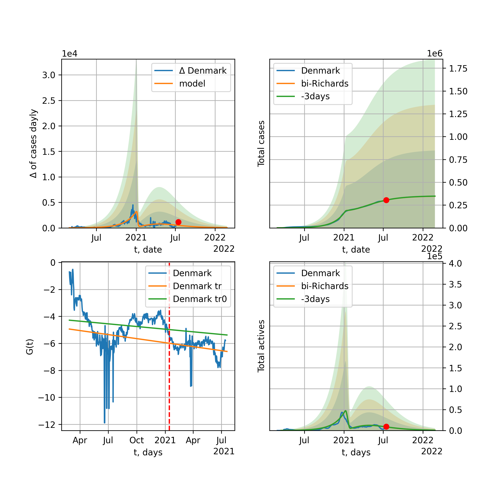
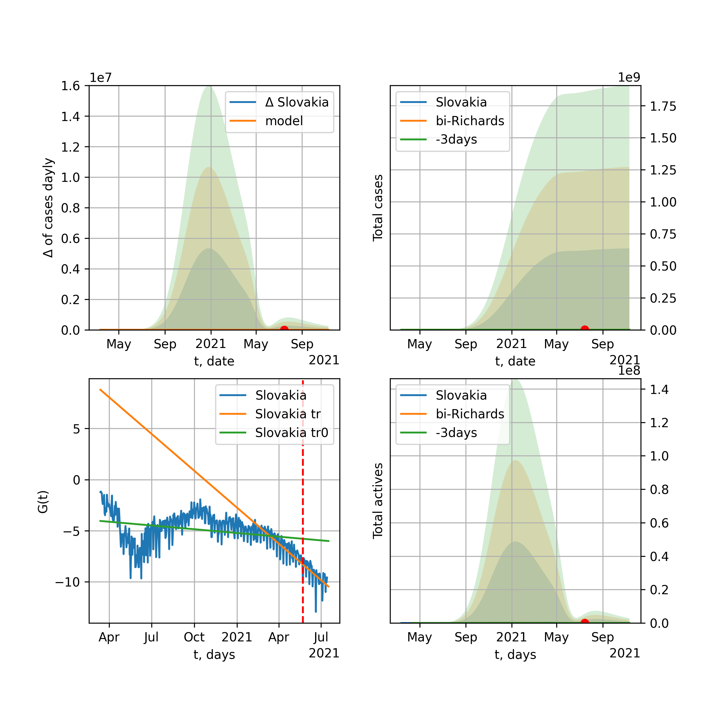

Multi-logistic model of COVID-19 dynamics
Model, code, results
Project maintained by algmaknick Hosted on GitHub Pages — Theme by mattgraham
World

World data at: 2020-12-04
+3 day model MAPE: 0.002721
model: bi-Richards
coeffs: [2.22633415e+07 2.06135387e+00 1.41508054e+02 1.88908690e-02]
rational stdev: 0.172738
forecast at the end of period: +649 days
deltaDaycases: 2650
total cases: 122514982 ± 21163020
total death: 2819663 ± 1461190
bi-Richards approximation splitting point: 200
actives k: 33
trend coefficient of determination: 0.811069
intercept: -3.102061
slope: -0.011018
trend coefficient of determination: 0.032156
intercept: -5.277496
slope: 0.001442
European Union

European Union data at: 2020-12-04
+3 day model MAPE: 0.013986
model: bi-Richards
coeffs: [1.11071856e+07 4.28750010e-02 2.55954455e+02 2.56638160e+00]
rational stdev: 0.235218
forecast at the end of period: +64 days
deltaDaycases: 78
total cases: 12577531 ± 2958465
total death: 294343 ± 207704
bi-Richards approximation splitting point: 200
actives k: 26
trend coefficient of determination: 0.535749
intercept: -32.776796
slope: -0.062945
trend coefficient of determination: 0.922685
intercept: -28.817950
slope: -0.062340
Brazil

Brazil data at: 2020-12-04
+3 day model MAPE: 0.006153
model: bi-Richards
coeffs: [2.16807604e+06 1.78660592e+00 1.91015426e+02 2.29629558e-02]
rational stdev: 0.265706
forecast at the end of period: +239 days
deltaDaycases: 160
total cases: 8723493 ± 2317882
total death: 234916 ± 187255
bi-Richards approximation splitting point: 220
actives k: 17
trend coefficient of determination: 0.538544
intercept: -2.140158
slope: -0.015387
trend coefficient of determination: 0.074426
intercept: -7.758592
slope: 0.007631
Russia

Russia data at: 2020-12-04
+3 day model MAPE: 0.003313
model: bi-Richards
coeffs: [3.69450935e+06 7.70486563e-01 3.52528293e+01 2.37076652e-02]
rational stdev: 0.173812
forecast at the end of period: +309 days
deltaDaycases: 259
total cases: 4814145 ± 836755
total death: 84496 ± 44059
bi-Richards approximation splitting point: 200
actives k: 26
trend coefficient of determination: 0.730924
intercept: -2.979924
slope: -0.015791
trend coefficient of determination: 0.026999
intercept: -5.048323
slope: 0.001054
USA

USA data at: 2020-12-04
+3 day model MAPE: 0.006522
model: bi-Richards
coeffs: [7.84699011e+06 2.32876398e+00 1.68170360e+02 2.02995426e-02]
rational stdev: 0.253007
forecast at the end of period: +652 days
deltaDaycases: 239
total cases: 24366493 ± 6164882
total death: 470999 ± 357497
bi-Richards approximation splitting point: 150
actives k: 52
trend coefficient of determination: 0.644662
intercept: -2.488102
slope: -0.018906
trend coefficient of determination: 0.377485
intercept: -6.438549
slope: 0.006365
Spain

Spain data at: 2020-12-04
+3 day model MAPE: 0.007562
model: bi-Richards
coeffs: [5.47137977e+05 9.01574523e-02 2.29150907e+02 9.08214111e-01]
rational stdev: 0.308123
forecast at the end of period: +449 days
deltaDaycases: 3
total cases: 11393441 ± 3510585
total death: 310138 ± 286682
bi-Richards approximation splitting point: 230
actives k: 35
trend coefficient of determination: 0.267640
intercept: -13.996411
slope: -0.017756
trend coefficient of determination: 0.675615
intercept: -7.346667
slope: -0.039575
Italy

Italy data at: 2020-12-04
+3 day model MAPE: 0.012787
model: bi-Richards
coeffs: [1.53852055e+06 6.90682493e-02 2.60719707e+02 1.68800558e+00]
rational stdev: 0.156726
forecast at the end of period: +64 days
deltaDaycases: 9
total cases: 1788260 ± 280266
total death: 62312 ± 29297
bi-Richards approximation splitting point: 200
actives k: 28
trend coefficient of determination: 0.580418
intercept: -19.808821
slope: -0.052536
trend coefficient of determination: 0.333023
intercept: -21.421718
slope: -0.021237
United Kingdom

United Kingdom data at: 2020-12-04
+3 day model MAPE: 0.002058
model: bi-Richards
coeffs: [1.68121920e+06 8.88191429e-02 2.18886250e+02 5.52840434e-01]
rational stdev: 0.201520
forecast at the end of period: +169 days
deltaDaycases: 4
total cases: 2004543 ± 403956
total death: 71880 ± 43455
bi-Richards approximation splitting point: 200
actives k: 35
trend coefficient of determination: 0.627730
intercept: -8.144540
slope: -0.029865
trend coefficient of determination: 0.723037
intercept: -5.904347
slope: -0.024341
France

France data at: 2020-12-04
+3 day model MAPE: 0.008802
model: bi-Richards
coeffs: [2.09244388e+06 3.58555323e-02 2.51638053e+02 5.44901313e+00]
rational stdev: 0.094142
forecast at the end of period: +134 days
deltaDaycases: 0
total cases: 2234984 ± 210406
total death: 53956 ± 15238
bi-Richards approximation splitting point: 95
actives k: 105
trend coefficient of determination: 0.770931
intercept: -43.255226
slope: -0.384919
trend coefficient of determination: 0.839126
intercept: -59.928493
slope: -0.081761
Germany

Germany data at: 2020-12-04
+3 day model MAPE: 0.022747
model: bi-Richards
coeffs: [1.05837308e+06 5.36523753e-02 2.52076279e+02 1.77223984e+00]
rational stdev: 0.202178
forecast at the end of period: +43 days
deltaDaycases: 318
total cases: 1280145 ± 258817
total death: 20765 ± 12594
bi-Richards approximation splitting point: 210
actives k: 17
trend coefficient of determination: 0.444157
intercept: -22.544112
slope: -0.033449
trend coefficient of determination: 0.724304
intercept: -18.516022
slope: -0.037096
Turkey

Turkey data at: 2020-12-04
+3 day model MAPE: 0.021830
model: bi-Richards
coeffs: [ 2.77846731e+06 6.29946543e-01 -2.01753726e+02 1.22591012e-02]
rational stdev: 0.205056
forecast at the end of period: +729 days
deltaDaycases: 189
total cases: 3017573 ± 618772
total death: 57156 ± 35160
bi-Richards approximation splitting point: 180
actives k: 17
trend coefficient of determination: 0.644326
intercept: -2.971648
slope: -0.018767
trend coefficient of determination: 0.732275
intercept: -8.264590
slope: 0.014160
Iran

Iran data at: 2020-12-04
+3 day model MAPE: 0.011410
model: bi-Richards
coeffs: [1.35139134e+06 7.03525479e-02 2.68715054e+02 5.07916229e-01]
rational stdev: 0.254824
forecast at the end of period: +393 days
deltaDaycases: 13
total cases: 1957711 ± 498871
total death: 95677 ± 73142
bi-Richards approximation splitting point: 200
actives k: 17
trend coefficient of determination: 0.717168
intercept: -6.542947
slope: -0.031421
trend coefficient of determination: 0.515482
intercept: -13.000870
slope: 0.006843
Canada

Canada data at: 2020-12-04
+3 day model MAPE: 0.004126
model: bi-Richards
coeffs: [2.23005146e+06 3.36314801e-01 2.51451089e+01 3.23521230e-02]
rational stdev: 0.241528
forecast at the end of period: +435 days
deltaDaycases: 453
total cases: 2309867 ± 557897
total death: 71699 ± 51951
bi-Richards approximation splitting point: 200
actives k: 17
trend coefficient of determination: 0.775552
intercept: -2.357336
slope: -0.024133
trend coefficient of determination: 0.427819
intercept: -6.719186
slope: 0.008243
South Africa

South Africa data at: 2020-12-04
+3 day model MAPE: 0.006350
model: bi-Richards
coeffs: [2.67091148e+05 1.84765374e+00 3.27084161e+01 1.14604789e-02]
rational stdev: 0.287170
forecast at the end of period: +169 days
deltaDaycases: 97
total cases: 912972 ± 262178
total death: 24883 ± 21436
bi-Richards approximation splitting point: 200
actives k: 17
trend coefficient of determination: 0.704522
intercept: -1.713533
slope: -0.019642
trend coefficient of determination: 0.288640
intercept: -8.240376
slope: 0.008848
Belgium

Belgium data at: 2020-12-04
+3 day model MAPE: 0.009131
model: bi-Richards
coeffs: [5.03416085e+05 6.50833894e-02 2.34758397e+02 2.75531325e+00]
rational stdev: 0.176907
forecast at the end of period: +64 days
deltaDaycases: 0
total cases: 569366 ± 100724
total death: 16614 ± 8817
bi-Richards approximation splitting point: 170
actives k: 61
trend coefficient of determination: 0.568918
intercept: -26.561050
slope: -0.080355
trend coefficient of determination: 0.773616
intercept: -23.121342
slope: -0.068190
Peru

Peru data at: 2020-12-04
+3 day model MAPE: 0.002281
model: bi-Richards
coeffs: [6.07105480e+05 3.80537487e+00 9.97267360e+00 8.32093327e-03]
rational stdev: 0.244670
forecast at the end of period: +29 days
deltaDaycases: 297
total cases: 966270 ± 236417
total death: 36023 ± 26441
bi-Richards approximation splitting point: 110
actives k: 21
trend coefficient of determination: 0.799451
intercept: -1.446196
slope: -0.026585
trend coefficient of determination: 0.810627
intercept: -2.321351
slope: -0.015241
Netherlands

Netherlands data at: 2020-12-04
+3 day model MAPE: 0.016571
model: bi-Richards
coeffs: [5.03057018e+05 5.57021329e-02 2.31290772e+02 1.43332232e+00]
rational stdev: 0.087082
forecast at the end of period: +29 days
deltaDaycases: 225
total cases: 550560 ± 47943
total death: 9740 ± 2544
bi-Richards approximation splitting point: 150
actives k: 35
trend coefficient of determination: 0.671650
intercept: -14.873334
slope: -0.061765
trend coefficient of determination: 0.710668
intercept: -15.487419
slope: -0.027925
India

India data at: 2020-12-04
+3 day model MAPE: 0.002747
model: bi-Richards
coeffs: [6.61756722e+06 1.48913430e-01 1.22300722e+02 1.91188879e-01]
rational stdev: 0.218416
forecast at the end of period: +309 days
deltaDaycases: 110
total cases: 10812717 ± 2361671
total death: 157250 ± 103037
bi-Richards approximation splitting point: 92
actives k: 13
trend coefficient of determination: 0.846870
intercept: -2.843172
slope: -0.033457
trend coefficient of determination: 0.965086
intercept: -3.728104
slope: -0.018221
Switzerland

Switzerland data at: 2020-12-04
+3 day model MAPE: 0.022219
model: bi-Richards
coeffs: [3.09070204e+05 7.77898587e-02 2.40351849e+02 1.45941310e+00]
rational stdev: 0.193431
forecast at the end of period: +29 days
deltaDaycases: 57
total cases: 344834 ± 66701
total death: 5298 ± 3074
bi-Richards approximation splitting point: 205
actives k: 17
trend coefficient of determination: 0.287365
intercept: -17.551495
slope: -0.024655
trend coefficient of determination: 0.705813
intercept: -8.753880
slope: -0.051997
Ecuador

Ecuador data at: 2020-12-04
+3 day model MAPE: 0.002956
model: bi-Richards
coeffs: [ 1.76296805e+05 1.55009913e+00 -1.07136287e+02 1.03282727e-02]
rational stdev: 0.078920
forecast at the end of period: +169 days
deltaDaycases: 58
total cases: 237547 ± 18747
total death: 16558 ± 3920
bi-Richards approximation splitting point: 80
actives k: 26
trend coefficient of determination: 0.273889
intercept: -2.223709
slope: -0.047336
trend coefficient of determination: 0.044285
intercept: -4.411670
slope: -0.004218
Portugal

Portugal data at: 2020-12-04
+3 day model MAPE: 0.013480
model: bi-Richards
coeffs: [2.96279539e+05 9.64232770e-02 2.35322217e+02 7.19426465e-01]
rational stdev: 0.230488
forecast at the end of period: +99 days
deltaDaycases: 64
total cases: 388018 ± 89433
total death: 5962 ± 4122
bi-Richards approximation splitting point: 221
actives k: 21
trend coefficient of determination: 0.489757
intercept: -9.627263
slope: -0.020491
trend coefficient of determination: 0.713214
intercept: -4.205953
slope: -0.034218
Saudi Arabia

Saudi Arabia data at: 2020-12-04
+3 day model MAPE: 0.000103
model: bi-Richards
coeffs: [3.18035540e+04 2.36882604e+00 4.30420474e+01 1.07311270e-02]
rational stdev: 0.222216
forecast at the end of period: +29 days
deltaDaycases: 141
total cases: 363965 ± 80878
total death: 6033 ± 4021
bi-Richards approximation splitting point: 200
actives k: 17
trend coefficient of determination: 0.970865
intercept: -1.781277
slope: -0.024514
trend coefficient of determination: 0.608971
intercept: -4.616220
slope: -0.010415
Sweden

Sweden data at: 2020-12-04
+3 day model MAPE: 0.019629
model: bi-Richards
coeffs: [2.60161583e+05 6.99382963e-02 2.66140770e+02 1.19601570e+00]
rational stdev: 0.257158
forecast at the end of period: +64 days
deltaDaycases: 43
total cases: 347486 ± 89359
total death: 8804 ± 6792
bi-Richards approximation splitting point: 200
actives k: 35
trend coefficient of determination: 0.802134
intercept: -9.950516
slope: -0.060541
trend coefficient of determination: 0.325419
intercept: -21.486579
slope: 0.011879
Pakistan

Pakistan data at: 2020-12-04
+3 day model MAPE: 0.002763
model: bi-Richards
coeffs: [2.76911517e+06 4.36287715e-01 5.95231263e+00 2.22721414e-02]
rational stdev: 0.271160
forecast at the end of period: +645 days
deltaDaycases: 170
total cases: 3054270 ± 828195
total death: 61375 ± 49927
bi-Richards approximation splitting point: 220
actives k: 26
trend coefficient of determination: 0.859791
intercept: -1.668081
slope: -0.025061
trend coefficient of determination: 0.912408
intercept: -13.774342
slope: 0.031632
Ireland

Ireland data at: 2020-12-04
+3 day model MAPE: 0.004928
model: bi-Richards
coeffs: [4.49396645e+04 1.11789169e-01 2.10919122e+02 6.48512717e-01]
rational stdev: 0.191226
forecast at the end of period: +29 days
deltaDaycases: 13
total cases: 73776 ± 14107
total death: 2094 ± 1201
bi-Richards approximation splitting point: 210
actives k: 35
trend coefficient of determination: 0.383538
intercept: -8.524455
slope: -0.028230
trend coefficient of determination: 0.842190
intercept: -1.976663
slope: -0.041231
Mexico

Mexico data at: 2020-12-04
+3 day model MAPE: 0.012812
model: bi-Richards
coeffs: [8.60869228e+05 1.59441591e+00 2.13181563e+01 1.10895314e-02]
rational stdev: 0.248689
forecast at the end of period: +239 days
deltaDaycases: 291
total cases: 1804875 ± 448853
total death: 169855 ± 126723
bi-Richards approximation splitting point: 200
actives k: 17
trend coefficient of determination: 0.946088
intercept: -1.724421
slope: -0.018581
trend coefficient of determination: 0.000658
intercept: -5.331046
slope: 0.000458
Singapore

Singapore data at: 2020-12-03
+3 day model MAPE: 0.000417
model: bi-Richards
coeffs: [3.96619544e+04 1.34878022e-01 7.14854388e+01 2.15803448e-01]
rational stdev: 0.334007
forecast at the end of period: +30 days
deltaDaycases: 2
total cases: 58811 ± 19643
total death: 29 ± 29
bi-Richards approximation splitting point: 80
actives k: 26
trend coefficient of determination: 0.170881
intercept: -3.178094
slope: -0.018916
trend coefficient of determination: 0.867035
intercept: -2.198141
slope: -0.032844
Chile

Chile data at: 2020-12-04
+3 day model MAPE: 0.002568
model: bi-Richards
coeffs: [ 1.97435801e+05 3.12863257e+00 -2.85643730e+00 7.54966858e-03]
S.Korea scenario coeffs: [0.36242246, 2.56241634, 1.84890887, 0.13324732]
rational stdev: 0.658501
forecast at the end of period: +99 days
deltaDaycases: 98
total cases: 585929 ± 385835
total death: 16362 ± 32323
bi-Richards approximation splitting point: 170
actives k: 10
trend coefficient of determination: 0.912282
intercept: -1.407240
slope: -0.025212
trend coefficient of determination: 0.527855
intercept: -4.371091
slope: -0.006626
Israel

Israel data at: 2020-12-04
+3 day model MAPE: 0.101579
model: bi-Richards
coeffs: [7.56619462e+04 5.62993083e-01 1.59638708e+02 5.71928598e-02]
rational stdev: 0.388890
forecast at the end of period: +78 days
deltaDaycases: 138
total cases: 375171 ± 145900
total death: 3175 ± 3704
bi-Richards approximation splitting point: 223
actives k: 11
trend coefficient of determination: 0.038294
intercept: -4.350626
slope: -0.004058
trend coefficient of determination: 0.151045
intercept: -10.468134
slope: 0.014823
Austria

Austria data at: 2020-12-04
+3 day model MAPE: 0.013746
model: bi-Richards
coeffs: [2.50052425e+05 7.23945869e-02 2.46650332e+02 1.97268439e+00]
rational stdev: 0.247344
forecast at the end of period: +589 days
deltaDaycases: 3
total cases: 1029080 ± 254536
total death: 12639 ± 9378
bi-Richards approximation splitting point: 210
actives k: 13
trend coefficient of determination: 0.311303
intercept: -21.204491
slope: -0.026317
trend coefficient of determination: 0.860228
intercept: -9.716398
slope: -0.071538
Belarus

Belarus data at: 2020-12-04
+3 day model MAPE: 0.003035
model: bi-Richards
coeffs: [4.03555522e+05 4.99880715e-01 2.21834857e+01 2.76188190e-02]
rational stdev: 0.093107
forecast at the end of period: +379 days
deltaDaycases: 53
total cases: 472156 ± 43961
total death: 3918 ± 1094
bi-Richards approximation splitting point: 200
actives k: 21
trend coefficient of determination: 0.690717
intercept: -2.840372
slope: -0.021874
trend coefficient of determination: 0.803210
intercept: -7.136532
slope: 0.009986
Japan

Japan data at: 2020-12-04
+3 day model MAPE: 0.036041
model: bi-Richards
coeffs: [ 7.97457884e+04 5.11685884e+00 -1.80411650e+02 3.66696767e-03]
rational stdev: 0.109933
forecast at the end of period: +421 days
deltaDaycases: 0
total cases: 402773 ± 44278
total death: 5812 ± 1916
bi-Richards approximation splitting point: 190
actives k: 11
trend coefficient of determination: 0.046473
intercept: -5.244659
slope: 0.003252
trend coefficient of determination: 0.199887
intercept: -6.973523
slope: 0.013008
China

China data at: 2020-12-04
+3 day model MAPE: 0.000210
model: bi-Richards
coeffs: [ 5.54198455e+03 3.32644841e+00 -3.17988010e+02 3.53398859e-03]
rational stdev: 0.069220
forecast at the end of period: +29 days
deltaDaycases: 7
total cases: 86656 ± 5998
total death: 4636 ± 962
bi-Richards approximation splitting point: 110
actives k: 17
trend coefficient of determination: 0.820998
intercept: -1.988762
slope: -0.082695
trend coefficient of determination: 0.110610
intercept: -10.108060
slope: 0.005664
Qatar

Qatar data at: 2020-12-04
+3 day model MAPE: 0.001111
model: bi-Richards
coeffs: [ 3.51703866e+04 1.96889431e+00 -6.77769924e+01 9.49307550e-03]
S.Korea scenario coeffs: [0.36242246, 2.56241634, 1.84890887, 0.13324732]
rational stdev: 0.080601
forecast at the end of period: +29 days
deltaDaycases: 98
total cases: 142535 ± 11488
total death: 243 ± 58
bi-Richards approximation splitting point: 144
actives k: 17
trend coefficient of determination: 0.917969
intercept: -1.932886
slope: -0.030822
trend coefficient of determination: 0.236225
intercept: -5.752419
slope: -0.003708
Poland

Poland data at: 2020-12-04
+3 day model MAPE: 0.000777
model: bi-Richards
coeffs: [1.10700758e+06 9.58478602e-02 2.41448348e+02 8.49779698e-01]
rational stdev: 0.273346
forecast at the end of period: +99 days
deltaDaycases: 34
total cases: 1188861 ± 324970
total death: 22090 ± 18114
bi-Richards approximation splitting point: 170
actives k: 21
trend coefficient of determination: 0.721783
intercept: -7.520916
slope: -0.048088
trend coefficient of determination: 0.245524
intercept: -11.148602
slope: -0.014018
UAE

UAE data at: 2020-12-04
+3 day model MAPE: 0.005339
model: bi-Richards
coeffs: [1.55404489e+05 4.18928786e-02 1.99678497e+02 7.38600618e-01]
rational stdev: 0.104075
forecast at the end of period: +169 days
deltaDaycases: 8
total cases: 212085 ± 22072
total death: 714 ± 222
bi-Richards approximation splitting point: 128
actives k: 11
trend coefficient of determination: 0.914940
intercept: -7.905628
slope: -0.050691
trend coefficient of determination: 0.020606
intercept: -13.047889
slope: -0.001728
Romania

Romania data at: 2020-12-04
+3 day model MAPE: 0.010773
model: bi-Richards
coeffs: [5.02616847e+05 1.61209538e-01 2.24612305e+02 3.15630330e-01]
rational stdev: 0.306982
forecast at the end of period: +232 days
deltaDaycases: 0
total cases: 655825 ± 201326
total death: 15799 ± 14550
bi-Richards approximation splitting point: 220
actives k: 17
trend coefficient of determination: 0.586170
intercept: -4.906763
slope: -0.017977
trend coefficient of determination: 0.344365
intercept: -4.105630
slope: -0.015280
Panama

Panama data at: 2020-12-04
+3 day model MAPE: 0.007611
model: bi-Richards
coeffs: [3.61630860e+05 8.12509617e-01 4.65389332e+01 1.86756033e-02]
rational stdev: 0.244365
forecast at the end of period: +281 days
deltaDaycases: 156
total cases: 477621 ± 116714
total death: 8677 ± 6361
bi-Richards approximation splitting point: 210
actives k: 26
trend coefficient of determination: 0.760836
intercept: -2.332939
slope: -0.015636
trend coefficient of determination: 0.459047
intercept: -8.171213
slope: 0.012134
Ukraine

Ukraine data at: 2020-12-04
+3 day model MAPE: 0.005686
model: bi-Richards
coeffs: [4.46849314e+06 1.52482488e-01 1.41062531e+02 8.84781173e-02]
rational stdev: 0.279755
forecast at the end of period: +659 days
deltaDaycases: 128
total cases: 5421380 ± 1516657
total death: 90755 ± 76167
bi-Richards approximation splitting point: 175
actives k: 35
trend coefficient of determination: 0.638318
intercept: -2.874160
slope: -0.017187
trend coefficient of determination: 0.000026
intercept: -5.052822
slope: -0.000027
Indonesia

Indonesia data at: 2020-12-04
+3 day model MAPE: 0.004346
model: bi-Richards
coeffs: [ 1.06576138e+06 3.05370868e-01 -7.77378179e+01 3.55143210e-02]
rational stdev: 0.111265
forecast at the end of period: +477 days
deltaDaycases: 49
total cases: 1108338 ± 123319
total death: 34368 ± 11471
bi-Richards approximation splitting point: 75
actives k: 17
trend coefficient of determination: 0.806250
intercept: -2.110605
slope: -0.030012
trend coefficient of determination: 0.501571
intercept: -3.441044
slope: -0.007276
Bangladesh

Bangladesh data at: 2020-12-04
+3 day model MAPE: 0.140071
model: bi-Richards
coeffs: [ 1.76843864e+04 -3.30450062e-01 -6.15690606e+01 4.52597665e-01]
rational stdev: 0.210313
forecast at the end of period: +267 days
deltaDaycases: 1
total cases: 423557 ± 89079
total death: 6051 ± 3817
bi-Richards approximation splitting point: 225
actives k: 35
trend coefficient of determination: 0.841411
intercept: -4.652185
slope: -0.035105
trend coefficient of determination: 0.092461
intercept: -12.795932
slope: 0.005768
South_Korea

South Korea data at: 2020-12-04
+3 day model MAPE: 0.028144
model: bi-Richards
coeffs: [ 3.39702929e+04 1.35644151e+00 -1.49547442e+02 9.22865443e-03]
rational stdev: 0.164800
forecast at the end of period: +169 days
deltaDaycases: 22
total cases: 43560 ± 7178
total death: 637 ± 314
bi-Richards approximation splitting point: 140
actives k: 26
trend coefficient of determination: 0.397446
intercept: -3.379033
slope: -0.026952
trend coefficient of determination: 0.081363
intercept: -6.332467
slope: 0.004542
Moldova

Moldova data at: 2020-12-04
+3 day model MAPE: 0.010964
model: bi-Richards
coeffs: [ 2.89169664e+05 6.14418098e-01 -4.96033735e+01 1.81317849e-02]
rational stdev: 0.264309
forecast at the end of period: +449 days
deltaDaycases: 37
total cases: 356651 ± 94266
total death: 7469 ± 5922
bi-Richards approximation splitting point: 170
actives k: 17
trend coefficient of determination: 0.667715
intercept: -2.242008
slope: -0.017408
trend coefficient of determination: 0.003371
intercept: -4.528786
slope: -0.000870
Denmark

Denmark data at: 2020-12-04
+3 day model MAPE: 0.004083
model: bi-Richards
coeffs: [2.73934896e+05 7.04051225e-01 1.83726103e+01 2.01797826e-02]
rational stdev: 0.233178
forecast at the end of period: +449 days
deltaDaycases: 9
total cases: 291087 ± 67875
total death: 2909 ± 2034
bi-Richards approximation splitting point: 206
actives k: 17
trend coefficient of determination: 0.229191
intercept: -3.425812
slope: -0.014521
trend coefficient of determination: 0.051861
intercept: -4.955126
slope: 0.002728
Serbia

Serbia data at: 2020-12-04
+3 day model MAPE: 0.014296
model: bi-Richards
coeffs: [4.87741845e+05 1.46510195e-01 2.36645122e+02 3.67514217e-01]
rational stdev: 0.253115
forecast at the end of period: +379 days
deltaDaycases: 0
total cases: 521588 ± 132022
total death: 4622 ± 3509
bi-Richards approximation splitting point: 220
actives k: 35
trend coefficient of determination: 0.590391
intercept: -5.989496
slope: -0.019430
trend coefficient of determination: 0.066134
intercept: -6.059928
slope: -0.005618
Kuwait

Kuwait data at: 2020-12-04
+3 day model MAPE: 0.001473
model: bi-Richards
coeffs: [ 1.56407747e+05 1.33544708e+00 -2.03564944e+02 9.64935911e-03]
rational stdev: 0.183884
forecast at the end of period: +218 days
deltaDaycases: 31
total cases: 176378 ± 32433
total death: 1085 ± 598
bi-Richards approximation splitting point: 90
actives k: 17
trend coefficient of determination: 0.168143
intercept: -2.534920
slope: -0.009763
trend coefficient of determination: 0.753041
intercept: -3.406731
slope: -0.009207
Philippines

Philippines data at: 2020-12-04
+3 day model MAPE: 0.003796
model: bi-Richards
coeffs: [4.54018311e+05 6.25124765e-02 1.30048524e+02 4.30109484e-01]
rational stdev: 0.232081
forecast at the end of period: +155 days
deltaDaycases: 13
total cases: 457930 ± 106277
total death: 8929 ± 6216
bi-Richards approximation splitting point: 36
actives k: 26
trend coefficient of determination: 0.766484
intercept: -2.924529
slope: -0.127038
trend coefficient of determination: 0.893444
intercept: -6.368096
slope: -0.018647
Norway

Norway data at: 2020-12-04
+3 day model MAPE: 0.000558
model: bi-Richards
coeffs: [2.87823234e+04 6.20800316e-02 2.58037637e+02 1.48120870e+00]
rational stdev: 0.269584
forecast at the end of period: +85 days
deltaDaycases: 1
total cases: 41706 ± 11243
total death: 390 ± 315
bi-Richards approximation splitting point: 230
actives k: 35
trend coefficient of determination: 0.360722
intercept: -14.431514
slope: -0.030928
trend coefficient of determination: 0.476498
intercept: -12.311461
slope: -0.026820
Czechia

Czechia data at: 2020-12-04
+3 day model MAPE: 0.013069
model: bi-Richards
coeffs: [5.17213437e+05 7.00198214e-02 2.37715174e+02 1.52122750e+00]
rational stdev: 0.278270
forecast at the end of period: +29 days
deltaDaycases: 65
total cases: 536666 ± 149338
total death: 8645 ± 7216
bi-Richards approximation splitting point: 160
actives k: 17
trend coefficient of determination: 0.563267
intercept: -12.332360
slope: -0.059514
trend coefficient of determination: 0.854754
intercept: -8.938675
slope: -0.057008
Colombia

Colombia data at: 2020-12-04
+3 day model MAPE: 0.005101
model: bi-Richards
coeffs: [7.42625691e+05 2.24342443e+00 9.46184569e+01 1.39750213e-02]
rational stdev: 0.250694
forecast at the end of period: +169 days
deltaDaycases: 45
total cases: 1575918 ± 395072
total death: 43652 ± 32829
bi-Richards approximation splitting point: 170
actives k: 11
trend coefficient of determination: 0.637039
intercept: -2.195188
slope: -0.011673
trend coefficient of determination: 0.556903
intercept: -3.539532
slope: -0.006645
Australia

Australia data at: 2020-12-04
+3 day model MAPE: 0.000725
model: bi-Richards
coeffs: [2.05822800e+04 1.20455692e-01 1.21352781e+02 6.47131984e-01]
rational stdev: 0.049877
forecast at the end of period: +15 days
deltaDaycases: 0
total cases: 27515 ± 1372
total death: 893 ± 133
bi-Richards approximation splitting point: 104
actives k: 26
trend coefficient of determination: 0.543595
intercept: -8.439706
slope: -0.048452
trend coefficient of determination: 0.867041
intercept: -5.372717
slope: -0.039427
Malaysia

Malaysia data at: 2020-12-04
+3 day model MAPE: 0.006355
model: bi-Richards
coeffs: [1.21217432e+05 1.12382310e+00 1.16207697e+02 2.33739188e-02]
rational stdev: 0.215921
forecast at the end of period: +169 days
deltaDaycases: 26
total cases: 129135 ± 27883
total death: 691 ± 447
bi-Richards approximation splitting point: 170
actives k: 15
trend coefficient of determination: 0.661528
intercept: -2.418423
slope: -0.033725
trend coefficient of determination: 0.493607
intercept: -13.168701
slope: 0.036448
Dominican Republic

Dominican Republic data at: 2020-12-04
+3 day model MAPE: 0.007900
model: bi-Richards
coeffs: [6.35484991e+04 2.13138499e+00 1.73863149e+01 1.05947571e-02]
rational stdev: 0.192405
forecast at the end of period: +99 days
deltaDaycases: 74
total cases: 166042 ± 31947
total death: 2652 ± 1530
bi-Richards approximation splitting point: 200
actives k: 35
trend coefficient of determination: 0.785191
intercept: -2.569143
slope: -0.015386
trend coefficient of determination: 0.058671
intercept: -7.207447
slope: 0.006425
Egypt

Egypt data at: 2020-12-04
+3 day model MAPE: 0.004259
model: bi-Richards
coeffs: [ 9.86805024e+04 8.25129192e-01 -1.63134285e+02 1.14357672e-02]
rational stdev: 0.140973
forecast at the end of period: +239 days
deltaDaycases: 138
total cases: 180704 ± 25474
total death: 10345 ± 4375
bi-Richards approximation splitting point: 140
actives k: 43
trend coefficient of determination: 0.798444
intercept: -2.050216
slope: -0.021468
trend coefficient of determination: 0.324884
intercept: -7.651438
slope: 0.005545
Finland

Finland data at: 2020-12-04
+3 day model MAPE: 0.022367
model: bi-Richards
coeffs: [5.81363483e+04 1.08964955e+00 3.44467212e+00 1.43120692e-02]
rational stdev: 0.132039
forecast at the end of period: +260 days
deltaDaycases: 18
total cases: 64821 ± 8558
total death: 988 ± 391
bi-Richards approximation splitting point: 210
actives k: 26
trend coefficient of determination: 0.379363
intercept: -3.225430
slope: -0.020306
trend coefficient of determination: 0.000383
intercept: -4.590599
slope: 0.000580
Morocco

Morocco data at: 2020-12-04
+3 day model MAPE: 0.001287
model: bi-Richards
coeffs: [ 2.23565448e+05 1.10721118e+00 -8.19919131e+01 1.26962208e-02]
rational stdev: 0.273297
forecast at the end of period: +379 days
deltaDaycases: 10
total cases: 501861 ± 137157
total death: 8264 ± 6775
bi-Richards approximation splitting point: 150
actives k: 11
trend coefficient of determination: 0.298256
intercept: -2.737777
slope: -0.013350
trend coefficient of determination: 0.523508
intercept: -2.573941
slope: -0.007434
Uzbekistan

Uzbekistan data at: 2020-12-04
+3 day model MAPE: 0.003177
model: bi-Richards
coeffs: [1.41323030e+04 9.57975501e+00 7.64449552e+01 4.30069899e-03]
rational stdev: 0.430085
forecast at the end of period: +57 days
deltaDaycases: 9
total cases: 75150 ± 32321
total death: 622 ± 802
bi-Richards approximation splitting point: 200
actives k: 11
trend coefficient of determination: 0.458793
intercept: -2.609266
slope: -0.010994
trend coefficient of determination: 0.536471
intercept: -1.759370
slope: -0.016984
Argentina

Argentina data at: 2020-12-04
+3 day model MAPE: 0.001753
model: bi-Richards
coeffs: [1.48865809e+06 1.78316733e-01 1.25497080e+02 1.44346023e-01]
rational stdev: 0.197958
forecast at the end of period: +239 days
deltaDaycases: 18
total cases: 1752956 ± 347011
total death: 47615 ± 28277
bi-Richards approximation splitting point: 140
actives k: 16
trend coefficient of determination: 0.086132
intercept: -3.860661
slope: -0.009472
trend coefficient of determination: 0.867951
intercept: -2.807935
slope: -0.016802
Algeria

Algeria data at: 2020-12-04
+3 day model MAPE: 0.011213
model: bi-Richards
coeffs: [4.01547906e+04 5.15177987e-02 2.33900993e+02 4.26791781e+00]
rational stdev: 0.112808
forecast at the end of period: +29 days
deltaDaycases: 2
total cases: 90193 ± 10174
total death: 2591 ± 876
bi-Richards approximation splitting point: 200
actives k: 35
trend coefficient of determination: 0.958677
intercept: -36.757996
slope: -0.089528
trend coefficient of determination: 0.428664
intercept: -47.384204
slope: -0.021171
Luxembourg

Luxembourg data at: 2020-12-04
+3 day model MAPE: 0.016227
model: bi-Richards
coeffs: [3.13891237e+04 3.31382347e-01 2.04985187e+02 1.69649922e-01]
rational stdev: 0.258415
forecast at the end of period: +1065 days
deltaDaycases: 2
total cases: 68057 ± 17587
total death: 634 ± 491
bi-Richards approximation splitting point: 190
actives k: 17
trend coefficient of determination: 0.158508
intercept: -5.175924
slope: -0.013020
trend coefficient of determination: 0.051046
intercept: -7.478905
slope: 0.007316
Thailand

Thailand data at: 2020-12-04
+3 day model MAPE: 0.003265
model: bi-Richards
coeffs: [ 2.35626607e+03 6.92182476e-01 -3.95300767e+02 1.04913604e-02]
rational stdev: 0.049071
forecast at the end of period: +99 days
deltaDaycases: 4
total cases: 4547 ± 223
total death: 67 ± 9
bi-Richards approximation splitting point: 60
actives k: 17
trend coefficient of determination: 0.843475
intercept: -1.266848
slope: -0.117645
trend coefficient of determination: 0.148338
intercept: -8.289716
slope: 0.007606
Hungary

Hungary data at: 2020-12-04
+3 day model MAPE: 0.023367
model: bi-Richards
coeffs: [1.10571743e+05 9.31823294e-02 2.43538740e+02 1.03164224e+00]
rational stdev: 2.301244
forecast at the end of period: +50 days
deltaDaycases: 12
total cases: 280415 ± 645304
total death: 6493 ± 44825
bi-Richards approximation splitting point: 210
actives k: 35
trend coefficient of determination: 0.424740
intercept: -9.276322
slope: -0.030745
trend coefficient of determination: 0.854902
intercept: -5.416373
slope: -0.040695
Greece

Greece data at: 2020-12-04
+3 day model MAPE: 0.001674
model: bi-Richards
coeffs: [5.63811257e+04 5.26632840e-01 2.22546533e+02 1.90288210e-01]
rational stdev: 0.609865
forecast at the end of period: +134 days
deltaDaycases: 0
total cases: 252645 ± 154079
total death: 6258 ± 11449
bi-Richards approximation splitting point: 240
actives k: 46
trend coefficient of determination: 0.009430
intercept: -5.737920
slope: -0.001757
trend coefficient of determination: 0.777090
intercept: 7.066443
slope: -0.050331
Iraq

Iraq data at: 2020-12-04
+3 day model MAPE: 0.001809
model: bi-Richards
coeffs: [ 7.28737256e+05 4.58235092e-01 -4.55553381e+01 3.37825324e-02]
rational stdev: 0.192690
forecast at the end of period: +281 days
deltaDaycases: 39
total cases: 734876 ± 141603
total death: 16237 ± 9386
bi-Richards approximation splitting point: 80
actives k: 17
trend coefficient of determination: 0.299387
intercept: -2.675489
slope: -0.017792
trend coefficient of determination: 0.947642
intercept: -1.707460
slope: -0.016447
Croatia

Croatia data at: 2020-12-04
+3 day model MAPE: 0.021960
model: bi-Richards
coeffs: [2.44252343e+05 2.21951460e+00 1.14892142e+02 1.47873884e-02]
rational stdev: 0.439049
forecast at the end of period: +169 days
deltaDaycases: 22
total cases: 261803 ± 114944
total death: 3710 ± 4886
bi-Richards approximation splitting point: 220
actives k: 11
trend coefficient of determination: 0.014410
intercept: -5.193361
slope: 0.003679
trend coefficient of determination: 0.098550
intercept: -0.669142
slope: -0.012489
Iceland

Iceland data at: 2020-12-04
+3 day model MAPE: 0.005043
model: bi-Richards
coeffs: [3.56438436e+03 4.80899254e-02 2.28494657e+02 2.59151956e+00]
rational stdev: 0.168048
forecast at the end of period: +29 days
deltaDaycases: 0
total cases: 5346 ± 898
total death: 26 ± 13
bi-Richards approximation splitting point: 170
actives k: 17
trend coefficient of determination: 0.344270
intercept: -20.042854
slope: -0.053460
trend coefficient of determination: 0.471203
intercept: -19.213959
slope: -0.031666
Estonia

Estonia data at: 2020-12-04
+3 day model MAPE: 0.042409
model: bi-Richards
coeffs: [1.31170869e+04 7.56215098e-02 2.50293320e+02 1.42384018e+00]
rational stdev: 0.184330
forecast at the end of period: +624 days
deltaDaycases: 3
total cases: 73784 ± 13600
total death: 661 ± 365
bi-Richards approximation splitting point: 215
actives k: 26
trend coefficient of determination: 0.191736
intercept: -14.719914
slope: -0.014736
trend coefficient of determination: 0.212093
intercept: -11.193469
slope: -0.022124
Bulgaria

Bulgaria data at: 2020-12-04
+3 day model MAPE: 0.010562
model: bi-Richards
coeffs: [1.84778151e+05 2.29057109e-01 2.11334955e+02 2.45718202e-01]
rational stdev: 0.199521
forecast at the end of period: +99 days
deltaDaycases: 13
total cases: 206996 ± 41300
total death: 6061 ± 3627
bi-Richards approximation splitting point: 210
actives k: 35
trend coefficient of determination: 0.595662
intercept: -4.408162
slope: -0.015744
trend coefficient of determination: 0.270920
intercept: -1.283467
slope: -0.021024
New Zealand

New Zealand data at: 2020-12-04
+3 day model MAPE: 0.002871
model: bi-Richards
coeffs: [ 6.75164967e+02 1.05978432e+00 -5.60106714e+01 1.76280135e-02]
rational stdev: 0.015586
forecast at the end of period: +50 days
deltaDaycases: 0
total cases: 2120 ± 33
total death: 25 ± 1
bi-Richards approximation splitting point: 100
actives k: 17
trend coefficient of determination: 0.536486
intercept: -3.283003
slope: -0.080980
trend coefficient of determination: 0.044185
intercept: -7.858641
slope: 0.005285
Slovenia

Slovenia data at: 2020-12-04
+3 day model MAPE: 0.020500
model: bi-Richards
coeffs: [6.40443354e+04 6.31772895e+00 1.57010929e+02 9.42583454e-03]
rational stdev: 1.532701
forecast at the end of period: +99 days
deltaDaycases: 4
total cases: 142554 ± 218493
total death: 2834 ± 13031
bi-Richards approximation splitting point: 230
actives k: 17
trend coefficient of determination: 0.000510
intercept: -4.966958
slope: 0.000664
trend coefficient of determination: 0.067964
intercept: 2.868821
slope: -0.026696
Slovakia

Slovakia data at: 2020-12-04
+3 day model MAPE: 0.020284
model: bi-Richards
coeffs: [1.14897487e+05 1.04341764e-01 2.20331422e+02 6.45714972e-01]
rational stdev: 0.285831
forecast at the end of period: +64 days
deltaDaycases: 26
total cases: 120802 ± 34529
total death: 1019 ± 873
bi-Richards approximation splitting point: 170
actives k: 30
trend coefficient of determination: 0.257774
intercept: -7.141082
slope: -0.025543
trend coefficient of determination: 0.613731
intercept: -2.726350
slope: -0.034120
Lithuania

Lithuania data at: 2020-12-04
+3 day model MAPE: 0.016724
model: bi-Richards
coeffs: [1.16438559e+05 1.93941002e+00 1.56071432e+02 2.11390792e-02]
rational stdev: 0.443573
forecast at the end of period: +190 days
deltaDaycases: 4
total cases: 182491 ± 80948
total death: 1547 ± 2058
bi-Richards approximation splitting point: 230
trend coefficient of determination: 0.013555
intercept: -4.379685
slope: -0.002458
trend coefficient of determination: 0.417846
intercept: 2.058894
slope: -0.021941
Latvia

Latvia data at: 2020-12-04
+3 day model MAPE: 0.018285
model: bi-Richards
coeffs: [1.48226607e+05 5.49068133e-01 8.00973704e+01 2.89632308e-02]
rational stdev: 0.142810
forecast at the end of period: +344 days
deltaDaycases: 21
total cases: 148423 ± 21196
total death: 1796 ± 769
bi-Richards approximation splitting point: 210
actives k: 46
trend coefficient of determination: 0.078337
intercept: -4.699596
slope: -0.008046
trend coefficient of determination: 0.014097
intercept: -2.651180
slope: -0.004481
Cyprus

Cyprus data at: 2020-12-04
+3 day model MAPE: 0.020815
model: bi-Richards
coeffs: [1.89438954e+04 2.20341165e+00 1.15329283e+02 1.44713473e-02]
rational stdev: 0.253206
forecast at the end of period: +134 days
deltaDaycases: 10
total cases: 21625 ± 5475
total death: 104 ± 79
bi-Richards approximation splitting point: 215
actives k: 43
trend coefficient of determination: 0.115657
intercept: -4.262102
slope: -0.009265
trend coefficient of determination: 0.239052
intercept: -0.821258
slope: -0.011638
Malta

Malta data at: 2020-12-04
+3 day model MAPE: 0.002442
model: bi-Richards
coeffs: [7.82111336e+03 4.24002450e-02 2.40031271e+02 1.17389673e+00]
rational stdev: 0.278635
forecast at the end of period: +190 days
deltaDaycases: 2
total cases: 25738 ± 7171
total death: 371 ± 310
bi-Richards approximation splitting point: 170
actives k: 17
trend coefficient of determination: 0.387087
intercept: -8.757926
slope: -0.039785
trend coefficient of determination: 0.534401
intercept: -9.286423
slope: -0.021367
Sri Lanka

Sri Lanka data at: 2020-12-04
+3 day model MAPE: 0.047588
model: bi-Richards
coeffs: [2.85446228e+04 5.19781421e-02 2.39955488e+02 1.69130237e+00]
rational stdev: 0.158789
forecast at the end of period: +50 days
deltaDaycases: 7
total cases: 30536 ± 4848
total death: 149 ± 70
bi-Richards approximation splitting point: 120
actives k: 17
trend coefficient of determination: 0.738536
intercept: -11.443550
slope: -0.071140
trend coefficient of determination: 0.000612
intercept: -19.756471
slope: 0.000734
References
- Worldometers COVID-19 Coronavirus Pandemic
- Su COVID-19 susijusi gyventojų ir verslo statistika
- Bi-logistic growth
- Least squares
- scikit-learn
- scipy.org
- European Centre for Disease Prevention and Control An agency of the European Union
- Aaron Miller, Mac Josh Reandelar, Kimberly Fasciglione, Violeta Roumenova, Yan Li, Gonzalo H Otazu, Correlation between universal BCG vaccination policy and reduced morbidity and mortality for COVID-19: an epidemiological study, https://doi.org/10.1101/2020.03.24.20042937
- c19.se